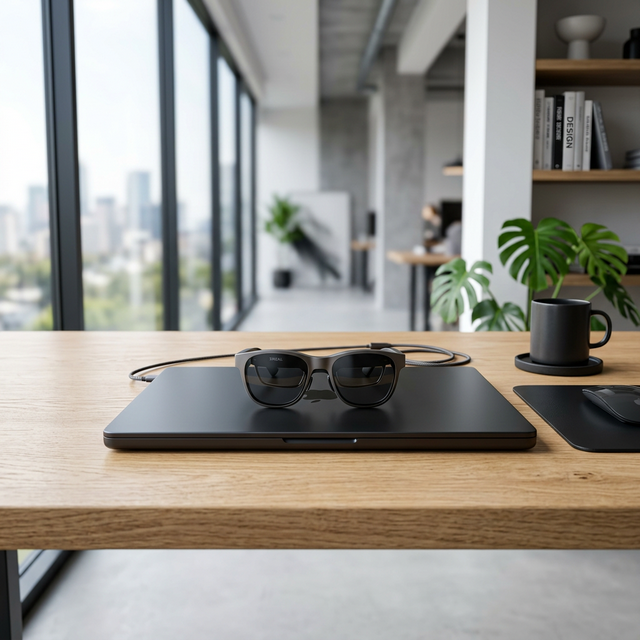
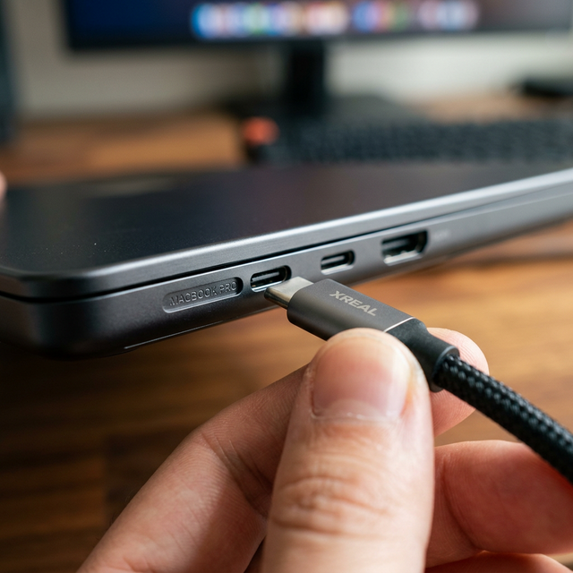
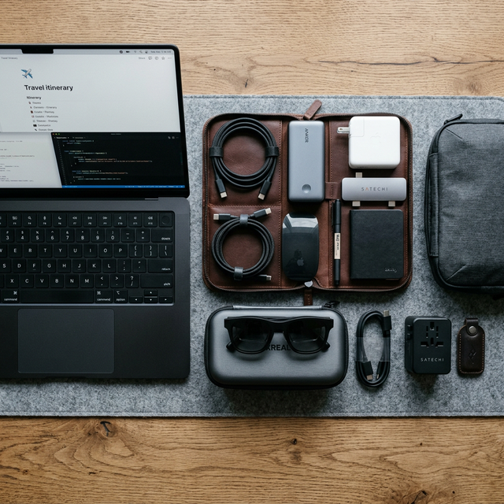

MacBook Pro M4 Productivity Setup with AR Glasses (2026 Spatial Workspace Guide)
Traditional laptop setups often limit productivity due to restricted screen space. Today, many professionals are opting for a Spatial Workspace: a portable, triple monitor environment powered by the MacBook Pro M4 Max and AR glasses. By replacing physical monitors with a virtual studio, you clear your physical desk and reduce cognitive load. This is the definitive guide to building a high performance portable workstation that fits in a standard leather briefcase.
MacBook Pro M4 AR Workspace Setup (Quick Summary)
- MacBook Pro M4 Max → Primary host device
- XREAL 1S → Virtual multi monitor display
- Beam Pro → Spatial app dashboard
- XREAL Hub → Power + display connection
- 140W GaN charger → Full power during extended AR sessions
Workstation Jump Menu:
The Professional Spatial Workspace Blueprint
The "Spatial Workspace" is built for uninterrupted flow state. Many developers report faster context switching when using multiple virtual displays compared to a single laptop screen.

Fig 1.1: A professional productivity setup A MacBook Pro M4 Max paired with AR glasses.
By leveraging the XREAL 1S's X1 Spatial Chip, your MacBook's screen isn't just mirrored it is expanded into a fixed 3DoF (3 Degrees of Freedom) environment. This allows you to place your browser on the left, your terminal in the center, and your documentation on the right, all while looking through a pair of lightweight glasses.
The High-Performance Hardware Stack
To achieve maximum productivity, your hardware cannot be the bottleneck. This is the stack used for an advanced developer workstation in 2026.
The Anchor: Apple MacBook Pro M4 Max (16 inch)
The M4 Max chip with its 32-core GPU is essential for AR productivity. Why? Because driving three virtual 1080p displays at 120Hz while running local AI models requires massive memory bandwidth.
View M4 Max on AmazonRead our full MacBook Pro M4 Pro vs Max Performance Review.
The Vision: XREAL 1S AR Glasses
The heart of the setup. These glasses offload the spatial "anchoring" to internal hardware, saving your MacBook's battery and ensuring zero jitter text clarity. Crucial for coding sessions over 2 hours.
Secure Your XREAL 1SThe Brain: XREAL Beam Pro 5G
For those who want to use Android apps (like Slack or Spotify) in spatial space alongside their MacBook, the Beam Pro is the bridge. It enables a "Spatial Dashboard" that floats beside your Mac screen.
Shop Beam ProWhy M4 Max + X1 Chip?
In 2026, the bottleneck for AR glasses isn't the resolution: it's the latency of text rendering. The MacBook Pro M4 Max utilizes Thunderbolt 5, providing a 120Gbps lane that ensures your virtual monitors respond with the same instantaneous snap as a physical OLED screen.

The "Neural" Protocol
When you plug the XREAL 1S into a Thunderbolt 5 port, the MacBook treats it as a high-bandwidth DisplayPort device. Combined with the X1 Spatial Chip inside the glasses, the CPU cycles required for head-tracking are reduced to nearly zero.
For developers using AR displays for programming, see our guide to the best AR glasses for coding.
This is why we recommend the XREAL 1S over the Meta Quest 3 for productivity; the weight saving and direct to die connection are superior for long term work.
AR Workspace Signal Flow
This signal flow shows how the MacBook sends massive video bandwidth to AR glasses, creating a multi-monitor spatial environment without physical hardware.
Configuring Your Spatial Workstation
Step 1: The Connection
Plug your XREAL Hub into the MacBook. This allows you to use the Anker 140W GaN Charger to keep your laptop at 100% while the glasses consume power. Without the hub, your MacBook will hit 0% in roughly 4 hours of AR use.
Get the XREAL Power Hub →Step 2: Nebula for Mac App
Download the latest Nebula software. For M4 Max users, we recommend the "Ultrawide 32:9" display mode. It creates a panoramic screen that curves around your peripheral vision.
Step 3: Powering the Beast
The Anker 140W GaN Charger is non negotiable. Driving an M4 Max at full tilt while powering high resolution waveguide optics requires consistent, high amperage delivery.
Secure the 140W Charging Block →The Nomad Kit: Traveling with Your Portable Workstation
The true power of this setup is that it fits into a single tech organizer. No more checking bags for monitors or carrying bulky tablet stands.

We use a hardshell electronic organizer to store the Beam Pro, Hub, and 140W GaN charger. It keeps your professional gear safe during transit.
AR Workspace vs Ultrawide Monitor Setup
When deciding between AR glasses and a traditional high-end monitor, the choice often comes down to your primary work environment:
- AR Glasses Workstation: Offers total portability and the ability to work anywhere with a massive virtual display. Ideal for those who value desk space and mobility.
- Ultrawide Monitor Setup: Provides consistent visual immersion and physical presence but is confined to a single desk.
- Portable Monitor Setups: A middle ground that offers more screen real estate than a laptop alone but lacks the infinite canvas of AR.
Final Professional Verdict
The MacBook Pro M4 Max and AR glasses combo is a powerful workstation for the specialized professional. It is the only setup that offers multi-monitor productivity with zero physical footprint. While the entry cost is significant, the ROI in terms of focus and mobility makes it a smart investment for advanced developers in 2026.
Common MacBook AR Workspace Issues
- MacBook not detecting glasses: Ensure you are using a Thunderbolt 5 or high-speed USB-C cable directly to the port.
- Nebula app issues: Restart the Nebula app if ultrawide modes are not activating correctly.
- Text clarity: Adjust the scaling in macOS settings specifically for the virtual display to ensure sharpness.
- Battery management: Always use the XREAL Hub for power passthrough during long sessions.
Spatial Setup FAQ
Can I use the XREAL 1S with prescription lenses?
Yes. The XREAL 1S includes a prescription lens frame in the box. We recommend using a digital optician service to order high-index lenses for the best spatial clarity.
Does the Nebula software drain the MacBook battery?
On M4 chips, the drain is minimal. However, we strongly suggest using the XREAL Hub to charge the MacBook while the glasses are engaged for sessions longer than 3 hours.
How do I optimize my IDE for AR?
Follow our guide to the best AR glasses for coding setup for specific VS Code and IntelliJ spatial settings.